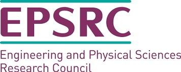

| Advise on the commissioning of NERC's environmental data service (Co-I, ~£53k) | ||
| PhD studentship (PI) | ||
| CrowdDNA, H2020 FET-Open (PI, UK, ~€3m) | ||
| Crowd and Environment (PI, ~£84k) | ||
| CASE PhD studentship (PI) | ||
| PhD studentship (PI) | ||
| PhD studentship (Co-I) | ||
| D-FOCUS: Drone-FOrmation Control for countering future Unmanned aerial Systems (Co-I, ~£125k) | ||
| The Living Museum of Umm Qais (Co-I, ~£250k) | ||
 |
PhD studentship (Co-I, 4 years plus consumables) | |
| VERICAV Innovate UK (Co-I, ~£3.37m) | ||
|  | PhD studentship (PI) | |
| Sound Asleep: Combining brain activity tracking with noise to promote deep sleep, memory consolidation and learning (Co-I, ~£177k) |
||
| Humanlike physics understanding for autonomous robots (Co-I, ~£300k) | ||
| Nvidia: GPU Grant Program (PI, ~£1.2k) | ||
| Virtual Holocaust Memoryscapes (Co-I, ~£75k) | ||
| A digital garment simulation tool for fashion design (Co-I, ~£75k) | ||
| Equipment funding for motion capture and eye-tracking (PI, ~£150k) | ||
| NERC:Virtual landscapes as a tool for exploring environmental attitudes (Co-I, ~£2.5k) | ||
| Full PhD studentship, School of Computing, University of Leeds (PI, ~£100k). | ||
| Startup funding, School of Computing, University of Leeds. (PI, > £6k) | ||
| All figures are based on 100% Full Economic Costs (FEC) or total costs. | ||